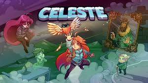
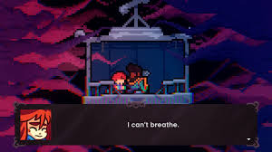

História
O jogo acompanha Madeline, uma jovem que decide escalar a misteriosa Montanha Celeste. Durante a subida, ela enfrenta não apenas desafios físicos, mas também seus próprios medos, ansiedade e inseguranças.
Ao longo da jornada, Madeline encontra personagens como Theo, um viajante que a incentiva, e também uma versão sombria de si mesma, que representa seus pensamentos negativos.
Personagens principais

Madeline – protagonista da história, determinada a chegar ao topo da montanha.
Theo – amigo que Madeline conhece durante a subida e que ajuda ela a continuar sua jornada.
Badeline – manifestação dos medos e inseguranças de Madeline.
Impacto do jogo

Celeste ficou conhecido por sua jogabilidade desafiadora e pela forma sensível como aborda temas de saúde mental, ansiedade e superação pessoal.